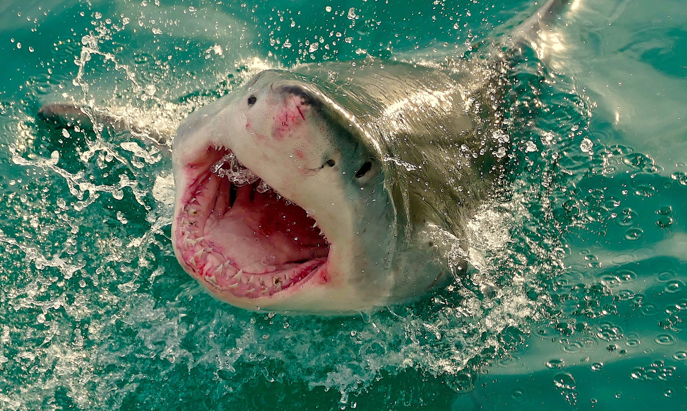

About Great White Sharks

About Great White Sharks
Great White Sharks are one of the most fascinating creatures in the ocean. They are known for their size, power, and predatory skills. These sharks can grow up to 20 feet long and weigh over 5,000 pounds. They have a lifespan of about 70 years and are found in coastal surface waters in all major oceans.
Great White Sharks are apex predators, meaning they are at the top of the food chain. They play a crucial role in maintaining the balance of marine ecosystems. Despite their fearsome reputation, they are not mindless killers and are often curious about their surroundings.
Contact Us Here to Learn More!